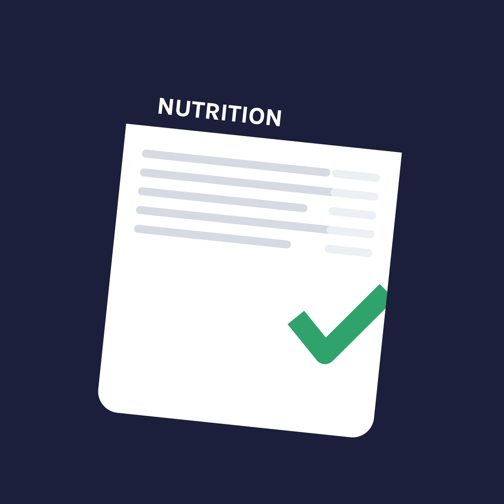
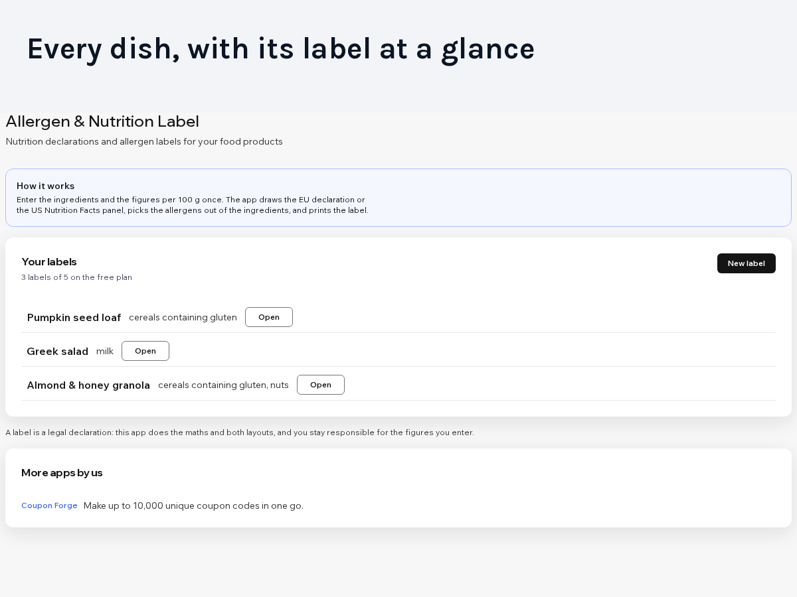

Allergen & Nutrition Label
Nutrition and allergen labels for every dish
- All 14 EU allergens found from your ingredients
- Nutrition panel in EU and US formats
- A label for every dish, ready to print as PDF
- Checks catch a label before it goes out

What it does
Every dish you sell has to say what is in it. The EU names fourteen allergens and a nutrition declaration of energy, fat, saturates, carbohydrate, sugars, protein and salt; the US expects Nutrition Facts. Doing that by hand for forty dishes, in two formats, is where mistakes creep in.
This app turns a recipe into a finished label. Paste the ingredients and it picks out the fourteen EU allergens, and knows the exceptions: coconut milk is not milk, almond milk is nuts. Enter the figures per 100 g or per serving and it computes energy from the macros when you have not declared it, salt from sodium, and the % reference intake for the EU panel or the % daily value for the US one.
Before you print it checks the label: a missing figure, saturates above fat, sugars above carbohydrate, percentages past 100, or an allergen in the ingredients missing from "Contains". Every label is saved on your site in Wix Data, and the free plan covers five of them.
Premium removes the limit and unlocks the PDF: a vector A6 page for the EU declaration or 3.5 by 6 inches for US Nutrition Facts, ready to print. It formats what you enter; it does not test your food or give legal advice.
Price
Free
Premium
$6/month, or $5/month billed yearly ($60/year). Unlimited labels and the printable PDF